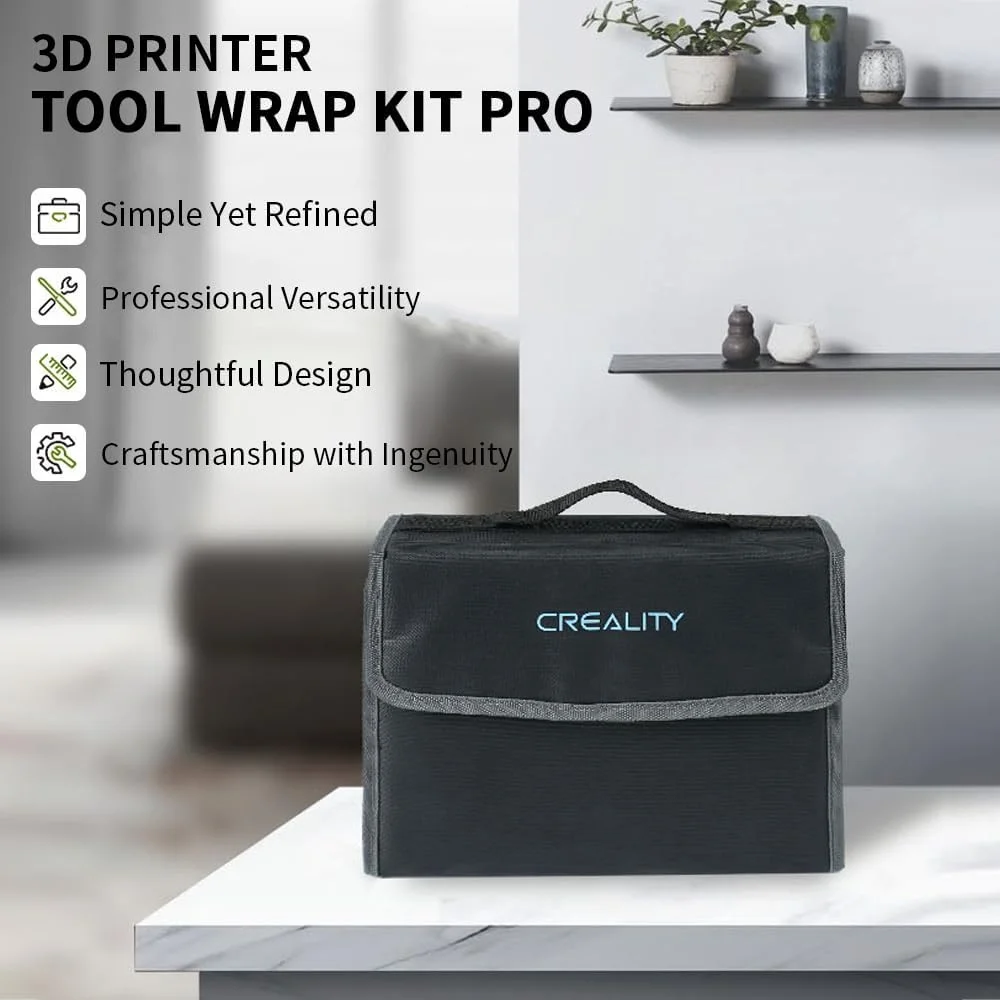
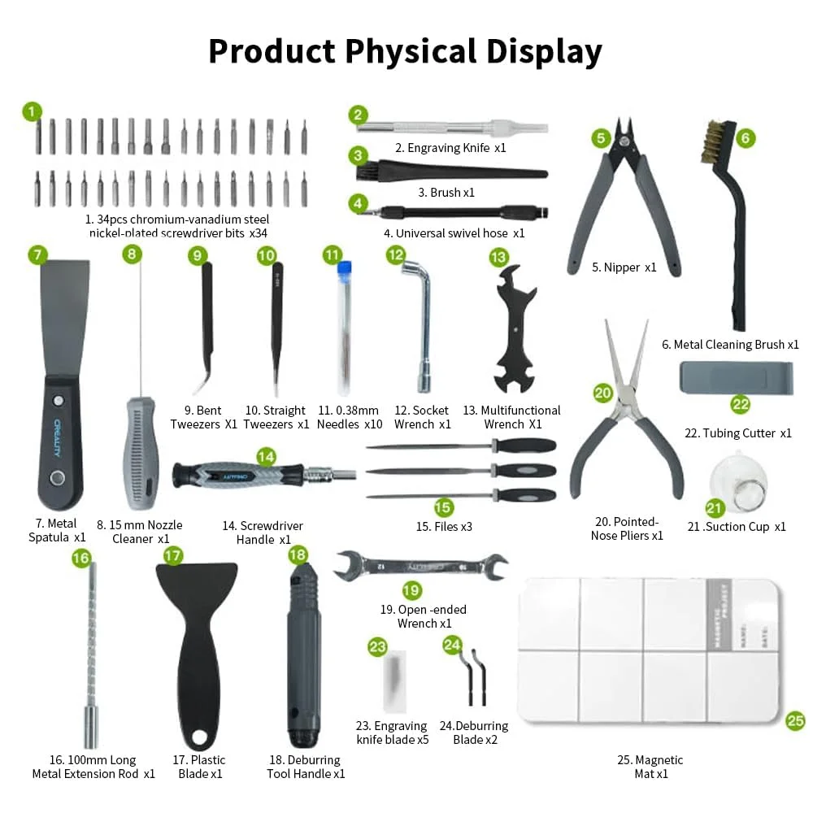
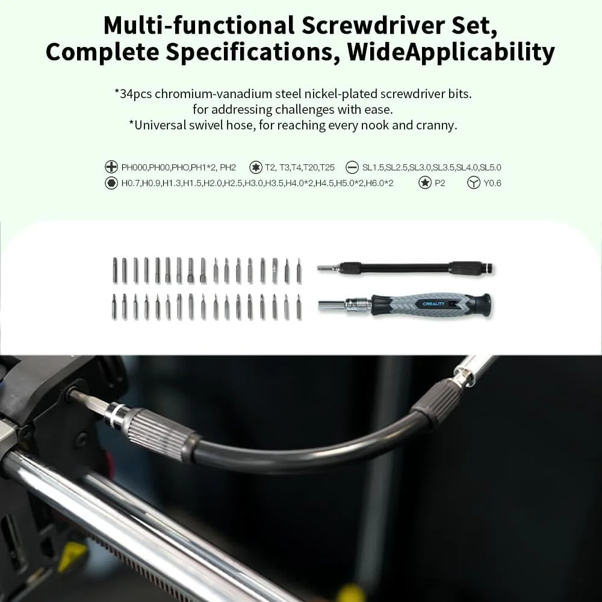
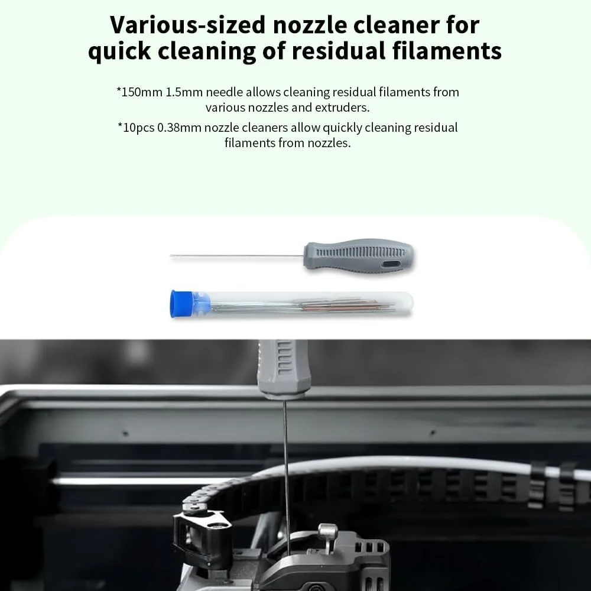
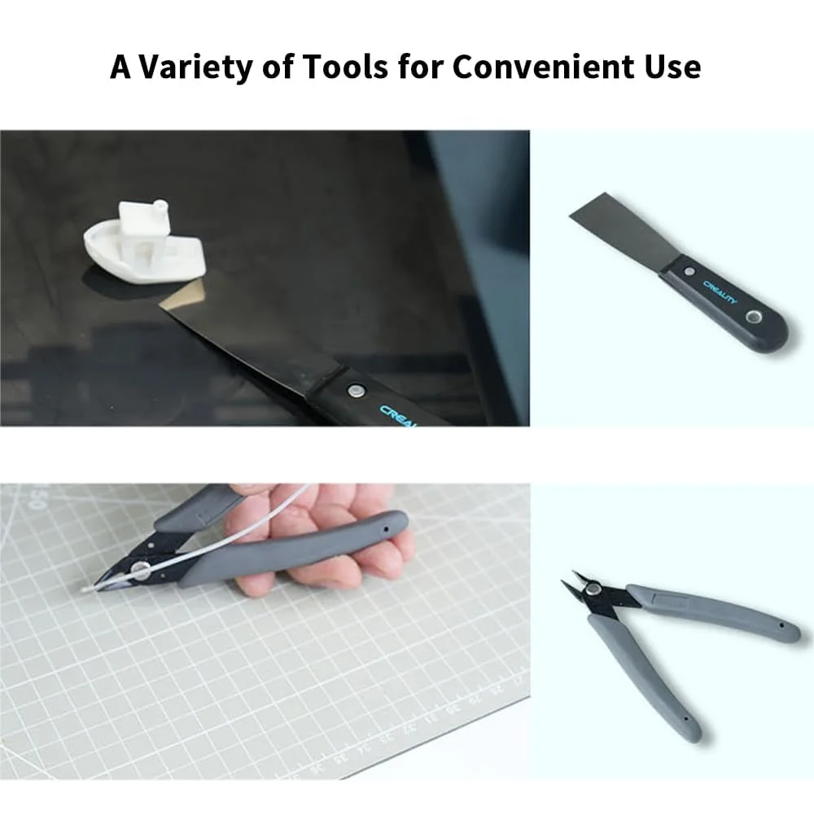

Creality
Creality Kit de Herramientas para Impresora 3D Pro
Valoración del editor
Puntuaciones editoriales de 0 a 10, comparables entre productos del mismo tipo. No son una puntuación oficial de Amazon.
Ficha técnica
General
| Tipo de accesorio | Kit de herramientas |
|---|---|
| Compatibilidad | Universal, apto para impresoras Creality y FDM en general, según el fabricante |
| Material | Brocas de acero vanadio cromadas y niqueladas, herramientas metálicas y estuche de transporte |
| Cantidad | Kit completo: alicates, destornilladores, limpiador de boquillas en varios tamaños, 34 brocas/puntas, mango convertible en T, espátula y estuche de transporte (según fotos del producto) |
Otros datos
| Brocas incluidas | 34 piezas de acero vanadio cromadas y niqueladas, según el fabricante |
|---|---|
| Mango | Convertible de doble vía, se transforma en forma de T para más torque |
| Limpieza | Incluye limpiador de boquillas en varios tamaños para retirar restos de filamento |
| Estuche | Bolsa de transporte organizadora, con compartimentos para cada herramienta |
| Diseño | Ergonómico y antideslizante, según el fabricante |
| Otras variantes en la misma ficha | Versiones más pequeñas o específicas desde 12,99€ hasta 49,42€, distintas del kit completo de 49,99€ |
Este kit de Creality reúne en un solo estuche las herramientas que de verdad se usan al mantener una impresora 3D: alicates para retirar soportes y piezas pequeñas, destornilladores y 34 brocas de acero vanadio para desmontar y ajustar, limpiador de boquillas en varios diámetros para retirar restos de filamento atascado, y un mango convertible que se transforma en forma de T para dar más torque cuando hace falta. Todo viene organizado en una bolsa de transporte con compartimentos, pensada para no perder piezas pequeñas.
Con 103 valoraciones y 4,6 sobre 5, tiene buena nota aunque la muestra es más pequeña que la de otros accesorios del catálogo. La ficha de Amazon ofrece también versiones más reducidas y específicas a partir de 12,99€, por si no necesitas el kit completo.
- 34 brocas de acero vanadio cromadas y niqueladas, más alicates, destornilladores y limpiador de boquillas
- Mango convertible en forma de T para más torque cuando hace falta
- Estuche de transporte organizador con compartimentos, para no perder piezas pequeñas
- 4,6/5 de valoración, una de las mejores notas de los accesorios del catálogo
- Muestra de reseñas más pequeña (103) que la de otros accesorios del catálogo
- La misma ficha vende versiones más reducidas a precios distintos — hay que fijarse en elegir el kit completo si es lo que se busca
- No se detalla en la ficha la lista exacta de cada pieza incluida, solo una descripción general
Ideal para: Quien acaba de comprar su primera impresora y quiere tener a mano, en un solo estuche organizado, las herramientas básicas de mantenimiento y limpieza sin comprarlas sueltas.
Qué dicen los compradores
4,6 sobre 5 con 103 valoraciones. No disponemos del texto de las reseñas individuales, solo la valoración agregada de Amazon.
Reseñas mostradas en Amazon en el momento de la captura.
Como Afiliados de Amazon, obtenemos ingresos por las compras que cumplen los requisitos aplicables. «Amazon» y el logo de Amazon son marcas de Amazon.com, Inc. o sus filiales.